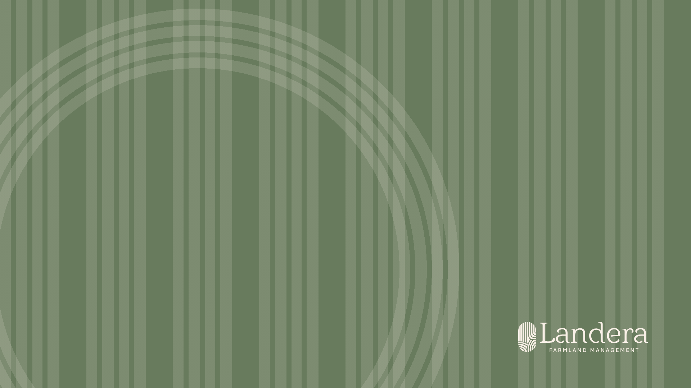
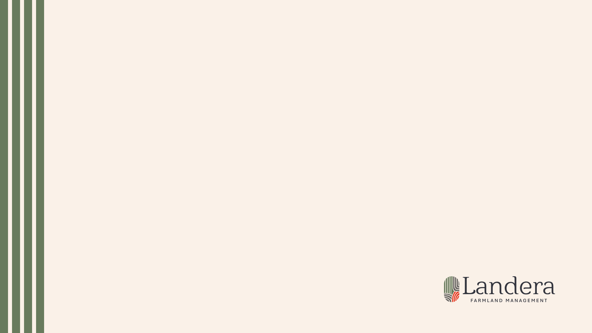
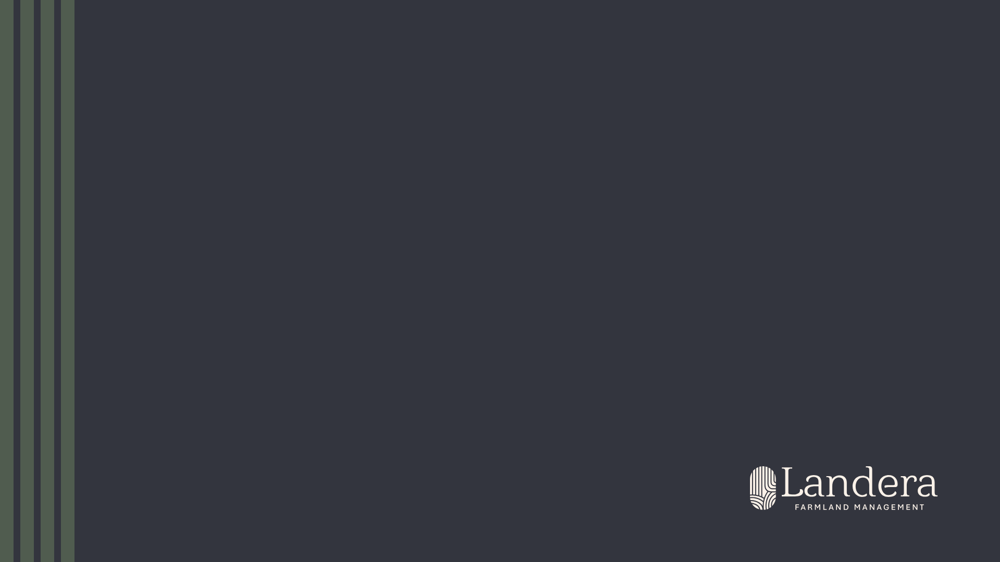
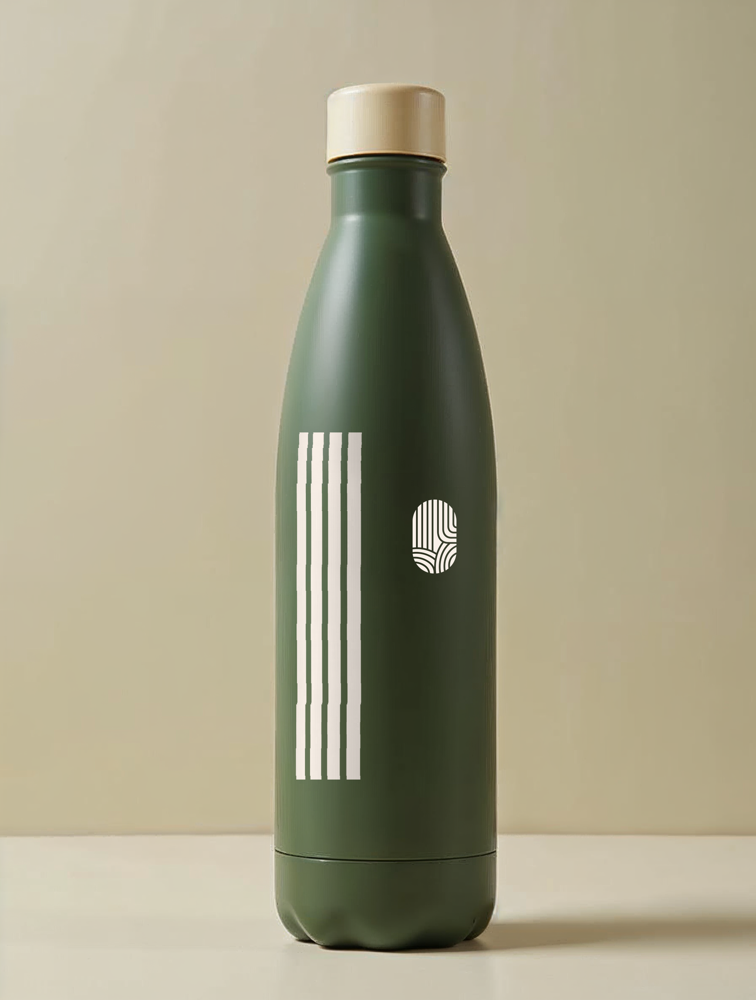

Patrones: fondos de pantalla y objetos — después de lo operativo
Después de lo operativo
Estos soportes van al final a propósito: primero vestuario, predios, fichas e informes. Los patrones se aplican cuando lo operativo ya está resuelto.
La franja, puesta a trabajar
El mismo ritmo de la lámina 14 —hueco fijo, franja viva— vale como remate en un fondo de escritorio y como textura envolviendo un objeto.
Fondos de pantalla
Tres, para los tres fondos de la marca: crema, tinta y verde. El logotipo va abajo a la derecha, lejos de los íconos del escritorio, y en la versión de patrón la textura no pasa del 14 % de contraste para que los íconos sigan leyéndose.
Objetos
Sobre un objeto la franja se envuelve en un solo paño y el isotipo la acompaña pequeño. Nunca las dos cosas grandes, nunca el bloqueo completo curvado.
Tono sobre tono: crema y verde. El terracota no entra en textura.
Fondos de escritorio · 1920 × 1080

Patrón — verde, textura al 14 %

Crema — remate

Tinta — remate
Objeto · botella

Franja envuelta + isotipo crema · referencia generada
Invariables
Las franjas de la lámina 14 con su ritmo: hueco fijo, franja viva · en escritorio, logotipo abajo a la derecha y textura al 14 % como máximo · en objeto, un solo paño de franjas y el isotipo pequeño, nunca el bloqueo completo curvado · tono sobre tono: crema y verde, sin terracota en textura.
Variables
Crema, tinta o verde según el equipo · el objeto (botella, libreta, taza) y su material · escala del módulo según el tamaño del objeto · con o sin logotipo si el isotipo ya está en el paño.
35 · Aplicaciones
Landera · Manual de marca